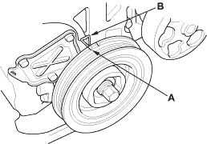
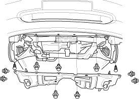
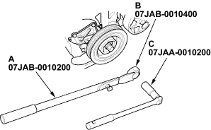
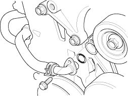

Special Tools Required
- Handle, 07JAB-0010200
- Pulley holder attachment, HEX 50 mm, 07JAB-0010400
- Socket wrench, 19 mm, 07JAA-0010200
NOTE: Keep the cam chain away from magnetic fields.
- Turn the crankshaft pulley so its TDC mark (A) lines up with the pointer (B).

- Remove the front tyres/wheels.
- Remove the splash shield.


- Remove the drive belt (see page 4-25).
- Remove the cylinder head cover (see page 6-24).
- Hold the pulley with handle (A) and holder attachment (B).

- Remove the bolt with a 19 mm socket (C) and breaker bar.
- Remove the oil cooler hose joint pipe from the water pump.
